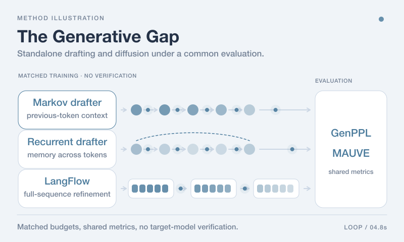
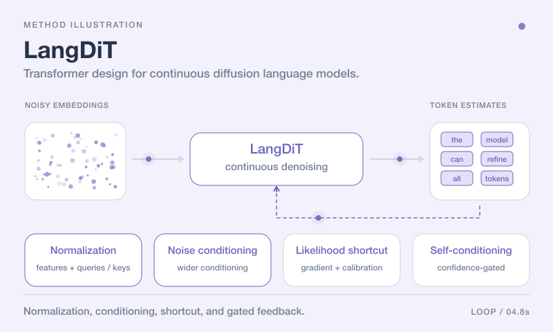
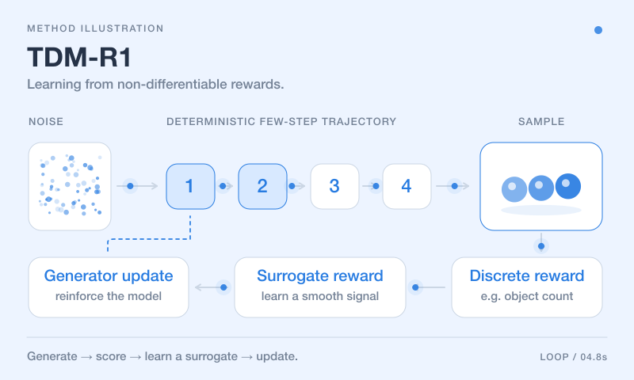
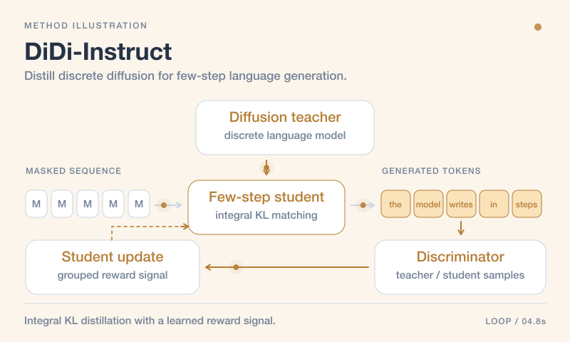
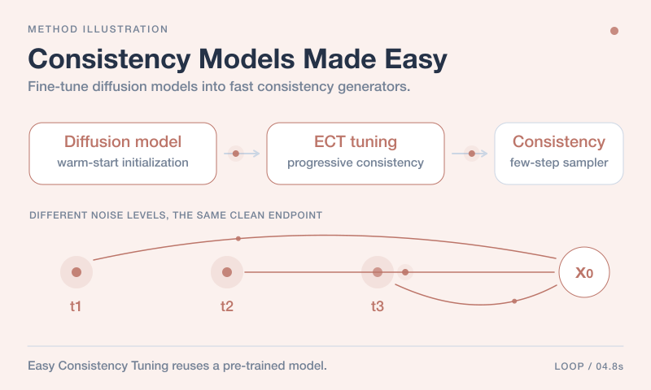
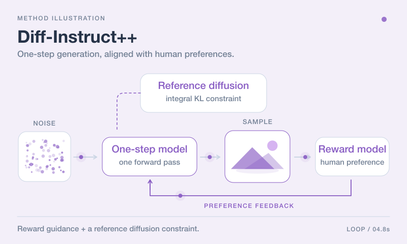
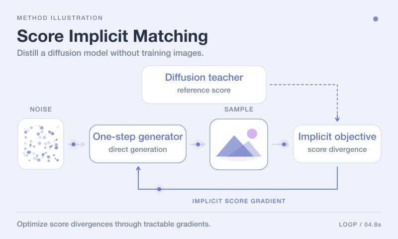
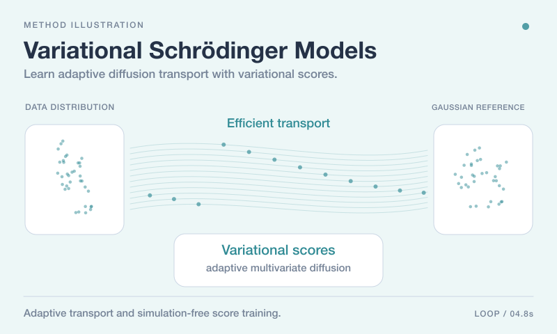
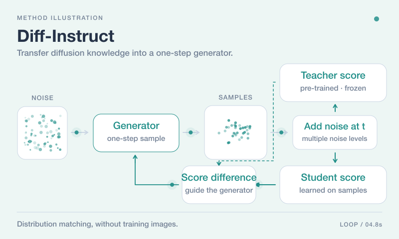
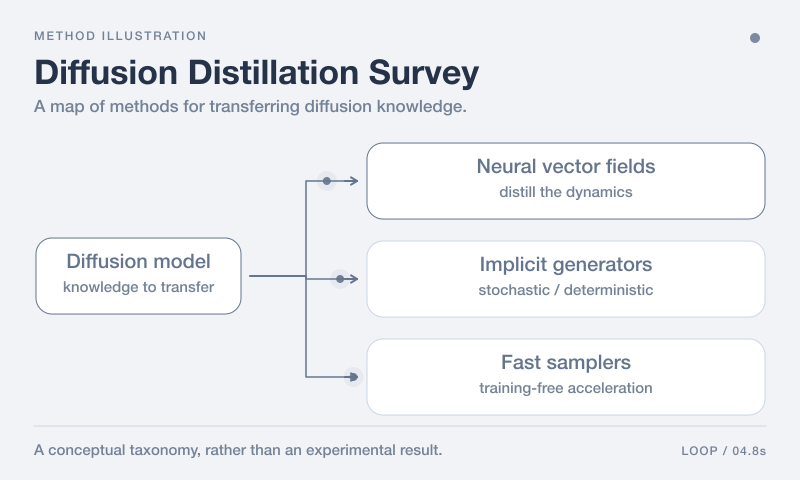

01 / Superintelligence
Toward Next-Gen
Superintelligence.
Efficient foundation models that understand, reason, and create across modalities, exploring a path toward superintelligence.
Weijian (William) Luo · PhD
More efficient intelligence.
Broader real-world adoption.
Senior Research Scientist at hi-lab, Xiaohongshu. Exploring next-generation paradigms for efficient, intelligent foundation models.
About me
Weijian is a RedStar Senior Research Scientist at the Humane Intelligence (hi) lab of Xiaohongshu (RedNote). He currently leads the research team on large-scale generative understanding foundation models at hi-lab. He earned his PhD in Statistics and Generative Modeling from the School of Mathematical Sciences at Peking University, where he previously received an MS in Applied Statistics. He holds a BS in Mathematics from the University of Science and Technology of China (USTC).
Statistics & Generative Modeling
Applied Statistics
Mathematics
Research
More capable intelligence with less compute, making superintelligence accessible to all.
Efficient foundation models that understand, reason, and create across modalities, exploring a path toward superintelligence.
Efficient one-step text-to-image and video generation, making superintelligence widely accessible through a thousandfold gain in efficiency.
Aligning generative models with rewards from the environment through reinforcement learning and feedback.
Weijian's early work laid the theoretical and practical foundations for modern one-step text-to-image models. He currently leads the research team on large-scale generative understanding models at hi-lab, developing efficient models that reason, understand human intent, and generate visual and audio responses in real time. He also leads research on next-generation generative models, including large-scale one-step text-to-image and video generation.
Selected publications

A controlled comparison of standalone drafting and continuous diffusion under matched training budgets, examining recurrent memory and iterative full-sequence refinement without target-model verification.
Read paper
LangDiT improves continuous diffusion language generation through normalization, noise conditioning, a calibrated likelihood shortcut, and confidence-gated self-conditioning.
Read paper
Reinforcement learning for few-step generative models.
Read paper
Distill a discrete diffusion language model into a few-step generator through integral KL matching.
Read paper
Easy Consistency Tuning adapts pre-trained diffusion models for efficient consistency generation.
Read paper
Bringing human preferences to one-step image generation.
Read paper
Data-free one-step diffusion distillation through implicit score-divergence gradients.
Read paper
Adaptive variational scores enable efficient diffusion transport and simulation-free score training.
Read paper
Transferring the knowledge of diffusion models into one-step generators.
Read paper
A structured overview of diffusion distillation, implicit generators, and training-free accelerated sampling.
Read paperNotes from the journey
Conversations & perspectives
Academic community
Weijian serves as a reviewer for academic journals including Nature Communications (NC), Journal of Machine Learning Research (JMLR), IEEE Transactions on Pattern Analysis and Machine Intelligence (TPAMI), IEEE Transactions on Image Processing (TIP), IEEE Transactions on Neural Networks and Learning Systems (TNNLS), and Pattern Recognition (PR). He also reviews for AI conferences including NeurIPS, ICML, ICLR, CVPR, ICCV, AISTATS, UAI, and ACM-MM.
Previous students whom I have advised, hosted, or worked with.
Open minds. New possibilities.
Weijian's team in Beijing is recruiting research scientists and engineers. Candidates with a strong research background and an interest in next-generation generative understanding models are welcome to apply to the RedStar Research Scientist program or the ACE internship program.
“What important truth do very few people agree with you on?”— Peter Thiel